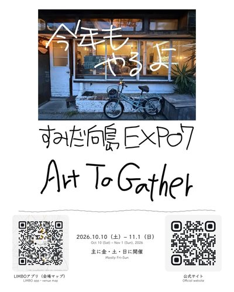
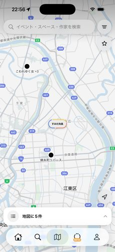
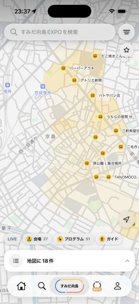
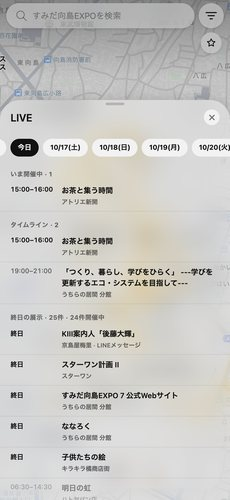
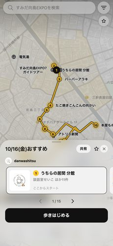
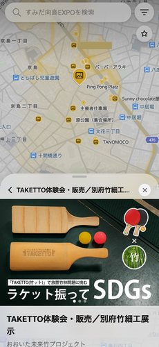
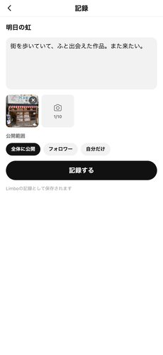
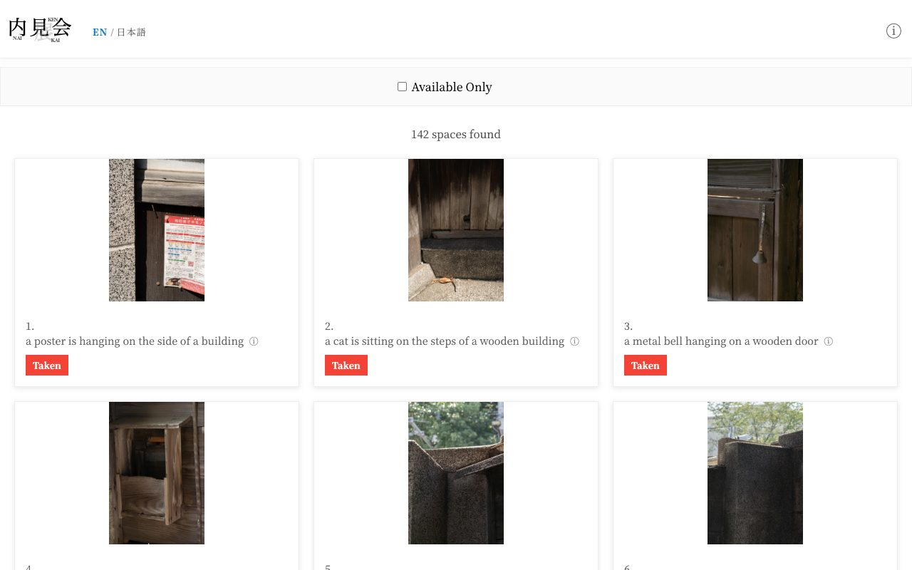
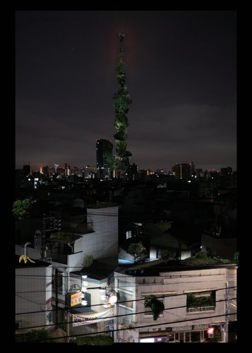

Visits to this site are counted with Cloudflare Web Analytics, without cookies.
Work
2026–
LIMBO Japan, founding member; UI/UX, festival mode
LIMBO is an art & culture platform that started in Euljiro, Seoul; LIMBO Japan was started by graduates of GAP, Tokyo University of the Arts. Project pages: 藝祭 2026 →すみだ向島EXPO 2026 →
2026–
Educational & Research Assistant, Art Media Center, Tokyo University of the Arts
Map of the Tokyo University of the Arts festival (Sep 4–6, Ueno campus), embedded in the official 藝祭 homepage and connected to it: campus map with a live "now" bar and time slider, stall lists by category and zone, floor plans, and an entry into the LIMBO app. More →
Led the UI/UX of the festival mode of the LIMBO app for a neighbourhood-wide art festival in Sumida, and programmed parts of it: live festival map; artists and venues edit their own pages in real time; automatic translation into 5 languages; route builder with walking time; booking with email notice; 記録 (record) posts. Goal: an open, Wikipedia-like "map of art" that any art space or festival can use. More →

Poster + app QR / ポスター＋アプリQR

Entrance from the LIMBO map / 入口（LIMBOの地図から）

Festival map / フェスティバル・マップ

Schedule / スケジュール

Guided walk / 散歩ルート

Programme page / プログラム詳細

Record a visit / 記録
2025
NAI(T/K)ENKAI 内(見/展)会, Ichida Family's House (市田邸, Taito) and online: co-planner and facilitator, with Juli Lee
A Meiji-period heritage house opened to anyone: visitors chose a spot in the house and brought something (or sent data/instructions online) to make it feel their own, leaving no trace. Designed and coded the website, including a space viewer: 142 spaces as photo cards with live availability, booked by space ID. GAP M2 Award (Tokyo University of the Arts). More →

2025
Rice Granary Arts Center, Hangzhou
Opening exhibitions (Ozawa Tsuyoshi; Guan Huaibin; Opening Special Exhibition). Official website design & coding (ongoing), video editing, fine-art printing, photo documentation, Chinese social media setup.
One, Two, Three, Comodo (GEISAI 藝祭, Tokyo University of the Arts)
2021
Island Cruising (島巡り) (Sumida Mukojima EXPO, Tokyo)

Shima Engei #1（島園芸）, inkjet print, 1100 × 1700 mm
2021
T3 Student Award (Tokyo)
Web Development
2025–
Official website, Rice Granary Arts Center, Hangzhou
2025
NAI(T/K)ENKAI website and room viewer
2022
Layout coding, colore design Inc.
2020
Web team leader & front-page coder, Tokyo Zokei University CS Festival
2019-23
Website layouts (Wix / Squarespace) for design and photography studios
Devices & Code in Exhibitions
2025
Receipt printer & comment logger, VIDEOCITY Japan
Python, OpenCL, thermal printer
2024
Person recognition, image processing and printing, One, Two, Three, Comodo
RealSense, Python, OpenCL
2021
We cannot stop at images anymore
RealSense, Python, OpenCL
Teaching
2026
Art-club workshop "Not a road to school" (通学（しない）路)
Immigration Museum Tokyo 2026 art education programme, Senju Aoba Junior High School (千寿青葉中学校), Adachi: 4 sessions (Jun–Jul) with Yuki Ito, Jingwei Ou and Suzuko Miyake; sound and inner-landscape drawing.
2026
TA, coding & design, Art Media Center, Tokyo University of the Arts
2024
Web-browsing workshop, Geidai extension programme, Edogawa High School
2022
TOEFL online lecturer, New Oriental (新東方 前途塾)
Film & Video
2025
Camera assistant, Horizon Studio
2023
DP, "P O E M" (Goa Short Film Festival)
2021-22
DP, "Beautiful Dove"
2020
DP, "DAYS"
2017-18
Cameraman for singer-songwriter Dean Wang (汪定中)
Translation & Other Activities
2026
Project of Bad Apple (坏苹果), exhibitions and screenings (several): volunteer; Japanese subtitles (from Chinese) for the queer documentary 游子 Wanderer · Instagram
2025
Gong Yi (工藝), manga「墙洞」(independent publisher 51 Personae): Chinese → Japanese
2025
ASAP programme (Tokyo University of the Arts, China): participant and interpreter (CAFA, China Academy of Art)
2013
Coursera MOOC How to Reason and Argue: subtitle translation (volunteer)
Skills
🌐 Web & app development: JavaScript, HTML/CSS, Python
🎥 Video editing & colour: DaVinci Resolve, Premiere Pro
📷 Photography: Digital & film photography, darkroom
🖨 Fine-art printing
Awards
2025
GAP Award, Graduation Show, Tokyo University of the Arts